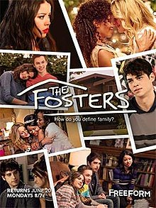

Luiza Lima Pinto
Programmer/Jeweller/Mixologist
I'm a graduated mixologist and goldsmith, but since I left home I wanted to learn code. Last year I joined a small cohort to learn the basics and loved it, so I decided to study to become a programmer.
My favourite series

|
Parks and Recreation"Leslie Knope, a midlevel bureaucrat in an Indiana Parks and Recreation Department, hopes to beautify her town (and boost her own career) by helping local nurse Ann Perkins turn an abandoned construction site into a community park, but what should be a fairly simple project is stymied at every turn by oafish bureaucrats, selfish neighbours, governmental red tape and a myriad of other challenges." |
Wentworth"Wentworth is set in modern-day Australia and focuses on Bea Smith (Danielle Cormack) when she first enters prison after being charged with the attempted murder of her husband. Bea is separated from her daughter and sent to Wentworth on remand, where she lives in "an uncertain limbo" until she is sentenced. Starting at the bottom of Wentworth's hierarchy, Bea is forced to learn how to survive in prison." |
|
|  |
The Fosters"The series follows the lives of police officer Stef Adams Foster and her wife Lena Adams Foster, a school vice principal, and their multi-ethnic, blended family. Stef and Lena are the parents of Brandon Foster, who is Stef's biological son, and the twins, Jesus and Mariana, who were adopted as small children. At the outset of the series, the couple take in two foster children, Callie and Jude." |